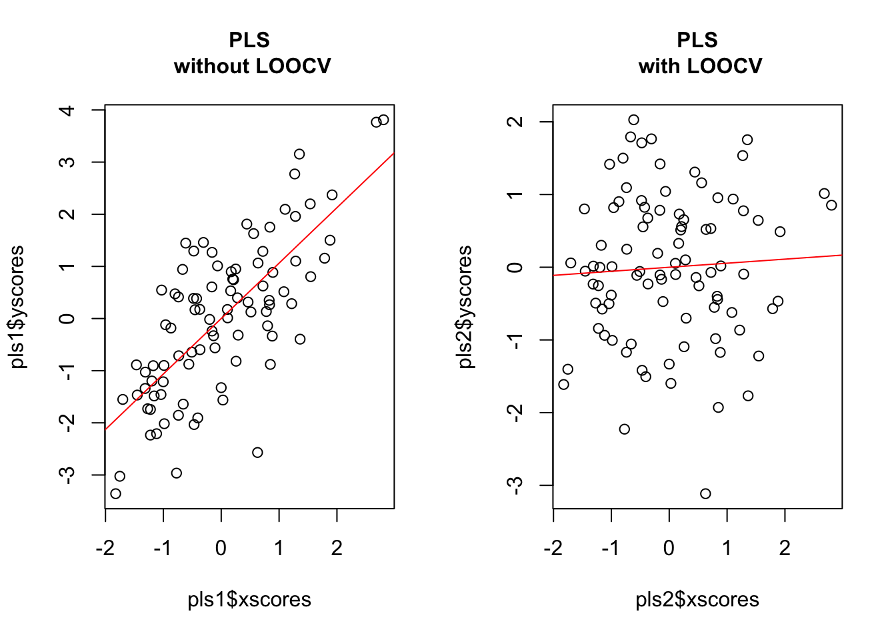
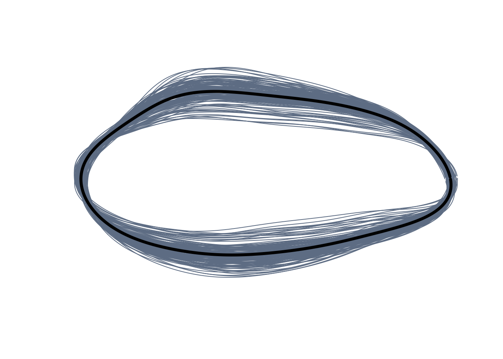

# install.packages("devtools")
devtools::install_github("millacarmona/morphospace")Skipping install of 'morphospace' from a github remote, the SHA1 (2bc7bee8) has not changed since last install.
Use `force = TRUE` to force installationmorphospace has been built to work in intergration with other widely used R packages covering other more essential steps in the geometric morphometrics pipeline (e.g. importation, normalization, statistical analysis) such as Morpho (Schlager 2017), geomorph (Adams et al. 2021), shapes (Dryden 2019), and Momocs (Bonhome et al. 2014).
First, let’s install morphospace from github. Install the devtools package if you need to.
# install.packages("devtools")
devtools::install_github("millacarmona/morphospace")Skipping install of 'morphospace' from a github remote, the SHA1 (2bc7bee8) has not changed since last install.
Use `force = TRUE` to force installationNow load the libraries.
library(morphospace)
library(geomorph)Loading required package: RRPPLoading required package: rglLoading required package: Matrixlibrary(magrittr)The basic idea behind morphospace is to build empirical morphospaces using multivariate methods, then use the resulting ordination as a reference frame in which elements representing different aspects of morphometric variation can projected. This workflow is outlined below using the tails data set from Fasanelli et al. (2022), which contains a sample of tail shapes from the 13 species of the genus Tyrannus (kingbirds and flycatchers). Two of these (the flycatchers T. savana and T. forficatus) display exaggeratedly elongated tails, as well as a considerable allometric variation and sexual dimorphism. The tails data set contains landmark data and centroid sizes from the tails of 281 specimens, their classification to species, sex and type (deep-forked, DF or non deep-forked, NDF), and their phylogenetic relationships (see Fasanelli et al. 2022 and references therein). The links between landmarks have been also included to improve visualization.
When loading data, make sure you set the correct working directory!
# Load tail data and extract shapes, centroid sizes, classification of sex
# and species, links between landmarks, and phylogenetic tree
setwd("datasets")
tails <- readRDS("tails.Rds")
shapes <- tails$shapes
sizes <- log(tails$sizes)
spp <- tails$data$species
sex <- tails$data$sex
wf <- tails$links
phy <- tails$treeThe starting point of this workflow is morphometric data that is already free of differences in orientation, position and scale (this standardization can be implemented using functions provided by the aforementioned R packages). However, morphospace provide some alternatives to perform some basic operations on shape data, such as the calculation of mean shapes or the analytical removal of undesired sources of variation (functions expected_shapes and detrend_shapes, respectively). For example, we can to get rid of sexual dimorphism before moving forward.
# Remove variation associated with sexual dimorphism and compute the
# consensus shape of each species
model <- lm(two.d.array(shapes) ~ sex)
detr_shapes <- detrend_shapes(model, method = "residuals") %>% arrayspecs(p = nrow(shapes), k = ncol(shapes))
sp_shapes <- expected_shapes(shapes = detr_shapes, x = spp)Once the shape data is ready, we build a morphospace using the mspace function and then use the resulting ordination as a canvas in which to project different elements depicting various aspects of morphometric variation (scatter points, groups centroids, convex hulls, confidence ellipses, a phylogeny, etc). These elements are added both to the plot and the “mspace” object as consecutive ‘layers’ and list slots, respectively, using the proj_* family of functions and the %>% pipe operator from the magrittr package (Bache & Wickham 2022).
For clarity, this is still an empirical morphospace because the data plotted are used to generate the axes.
# Generate morphospace using detrended shapes, project specimens
msp1 <- mspace(detr_shapes, links = wf, cex.ldm = 5) %>% proj_shapes(shapes = detr_shapes)
title("Morphospace", cex.main = 1)Now let’s generate our morphospace (i.e. plot the axes), plot the obsevations, and plot convex hulls. All with colour!
msp2 <- mspace(detr_shapes, links = wf, cex.ldm = 5) %>%
proj_shapes(shapes = detr_shapes, col = spp) %>%
proj_groups(shapes = detr_shapes, groups = spp)
title("Morphospace\n+ species differentiation", cex.main = 1)How about we add a phylogeny? Let’s use proj_phylogeny to do so.
msp3 <- mspace(shapes = detr_shapes, links = wf, cex.ldm = 5) %>%
proj_shapes(shapes = detr_shapes, col = spp) %>%
proj_groups(shapes = detr_shapes, groups = spp) %>%
proj_phylogeny(shapes = sp_shapes, tree = phy, lwd = 1.5)
title("Morphospace\n+ groups + phylogeny", cex.main = 1)You can check what you’re plotting using the names function. Class is short for classification, scores is shore for…well, scores.
names(msp1$projected)[1] "shapemodels" "scores" names(msp2$projected)[1] "shapemodels" "scores" "gr_class" "gr_scores" names(msp3$projected)[1] "shapemodels" "scores" "gr_class" "gr_scores" "phylo_scores"
[6] "phylo" Another potentially interesting element that can be projected into morphospaces are morphometric axes or phenotypic change vectors, i.e. synthetic axes built as linear combinations of shape variables that describe a linear path across the morphospace. For example, we can project the first two PC axes resulting from a PCA of the non-deep-forked specimens data into our morphospace. The proj_axis function does this.
pca <- prcomp(two.d.array(detr_shapes[,,tails$data$type == "NDF"]))
mspace(detr_shapes, links = wf, cex.ldm = 5) %>%
proj_shapes(shapes = detr_shapes, col = spp) %>%
proj_groups(shapes = detr_shapes, groups = spp) %>%
proj_phylogeny(shapes = sp_shapes, tree = phy, pch.tips = 16) %>%
proj_axis(obj = pca, axis = 1, mag = 1, col = "red", lwd = 3, lty = 1) %>%
proj_axis(obj = pca, axis = 2, mag = 1, col = "red", lwd = 3, lty = 2)
title("Morphospace\n+ PC1 and PC2 of NDF species projected", cex.main = 1)Finally, landscape surfaces intended to represent functional or performance measurements can be projected as contour maps with proj_landscape. These surfaces are interpolated using the akima package (Akima & Gebhardt 2022) from values provided directly through the argument X and corresponding to the shapes provided through the shapes argument, or computed through the latter using an arbitrary function, provided using the argument FUN.
These landscapes can be computed for either a region of the morphospace from a sample of empirical shapes occupying that region (“empirical landscapes”) or from the set of synthetic shapes mapping morphometric variation in the background (“theoretical landscapes”). For the latter case, leave shapes = NULL; if values are been provided using X these must have been computed beforehand and arranged in the same order as the shape models in the background (that is, from left to right and from bottom to top), which can be extracted using extract_shapes. This last step is not necessary if FUN is provided. A scalebar can be added using plot_mspace and scalebar = TRUE.
# compute lift/drag ratio for each tail in the data set
library(Momocs)
Attaching package: 'Momocs'The following object is masked _by_ '.GlobalEnv':
shapesThe following object is masked from 'package:geomorph':
mosquitoThe following object is masked from 'package:morphospace':
wingsThe following object is masked from 'package:stats':
filterLDs <- apply(two.d.array(detr_shapes), 1, morphospace:::computeLD)
# use LDs values to project an empirical landscape
mspace(detr_shapes, links = wf, cex.ldm = 5) %>%
proj_shapes(shapes = detr_shapes) %>%
proj_landscape(shapes = detr_shapes, X = LDs, linear = TRUE,
display = "filled.contour", resolution = 300)Now let’s project a theoretical landscape by using the argument “FUN” to run the computeLD function through the background shape models.
mspl <- mspace(detr_shapes, links = wf, cex.ldm = 5) %>%
proj_shapes(shapes = detr_shapes) %>%
proj_landscape(shapes = NULL, FUN = morphospace::: computeLD, linear = FALSE,
display = "contour", lwd = 2)A scale bar can be added as such:
plot_mspace(mspl, display.landsc = "filled.contour", palette.landsc = terrain.colors, scalebar = TRUE)The default settings of mspace rely on the prcomp function from the stats package to build the synthetic morphometric space. However, morphospace also provides functions for other ordination methods, namely: 1. Phylogenetic PCA (Revell 2009) (implemented through the phy_prcomp function, which wraps phyl.pca from phytools, Revell 2012). 2. Between-groups PCA, which finds the combinations of traits that maximise the separation of clusters (bg_prcomp function - produces number of axes equal to lowest number of groups minus one, number of original variables, and the number of observations). 3. Both ordinary and phylgenetic versions of Partial Least Squares (PLS), used to test for covariation (pls_shapes function [an user-friendly wrapper of pls2b, which is used in the following chunk to test for covariation with a synthetic covariate]).
These have been styled/wrapped to share format with prcomp, and both bgPCA and PLS functions allow for leave-one-out cross-validation (LOOCV), which alleviates some spurious patterns that arise when the number of variables exceeds the number of samples (as it is common in geometric morphometric analyses; see Cardini et al. 2019 and Cardini & Polly 2020).
# Simulate 100 random normal distributions, and add an artificial classification
# and an artificial covariate
set.seed(123)
random_y <- do.call("cbind", lapply(1:100, function(i) {rnorm(90)}))
class <- factor(rep(c("A", "B", "C"), each = 30))
random_x <- rnorm(90)
# Perform bgPCA on the set of random variables to look for the bgPCs maximizing separation between artificial groups, with and without LOOCV
layout(rbind(c(1,2)))
bgpca1 <- bg_prcomp(x = random_y, groups = class)
plot(bgpca1$x, col = c(1:3)[class])
hulls_by_group_2D(bgpca1$x, class)
title("bgPCA\n without LOOCV", cex.main = 1)
bgpca2 <- bg_prcomp(x = random_y, groups = class, LOOCV = TRUE)
plot(bgpca2$x, col = c(1:3)[class])
hulls_by_group_2D(bgpca2$x, class)
title("bgPCA\n with LOOCV", cex.main = 1)Now let’s use PLS to look for the axis maximising covariation between the traits and the artificial covariate.
# Without LOOCV
layout(rbind(c(1,2)))
pls1 <- pls2b(x = random_x, y = random_y)
plot(pls1$xscores, pls1$yscores)
abline(lm(pls1$yscores ~ pls1$xscores), col = "red")
title("PLS\n without LOOCV", cex.main = 1)
# With LOOCV
pls2 <- pls2b(x = random_x, y = random_y, LOOCV = TRUE)
plot(pls2$xscores, pls2$yscores)
abline(lm(pls2$yscores ~ pls2$xscores), col = "red")
title("PLS\n with LOOCV", cex.main = 1)
These methods can be used instead of regular PCA for building morphospaces via the FUN and … arguments (adding the argument groups for bg_prcomp, tree for phy_prcomp, and X [and potentially also a tree] for pls_shapes, respectively) of the mspace function. The resulting morphospace can be combined with the proj_* functions in the same way as before. Note we can add a legend separately by using plot_mspace.
msp.IV <- mspace(detr_shapes, FUN = bg_prcomp, LOOCV = TRUE, groups = spp, links = wf, invax = c(1,2), cex.ldm = 5, plot = T) %>%
proj_shapes(shapes = detr_shapes, col = spp) %>%
proj_groups(shapes = detr_shapes, groups = spp) %>%
proj_shapes(shapes = sp_shapes, col = "black", pch = 16)
plot_mspace(msp.IV, legend = TRUE)
title("Morphospace emphasizing interspecific variation", cex.main = 1)Now for a phylogenetic morphospace version. Phylogenetic PCA for all species, adding projection of intrapspecific variation.
MSP.phyPCA <- mspace(sp_shapes, FUN = phy_prcomp, tree = phy, links = wf, xlim = c(-0.25, 0.15), ylim = c(-0.2, 0.15), cex.ldm = 5, plot = T) %>%
proj_shapes(shapes = detr_shapes, col = spp) %>%
proj_groups(shapes = detr_shapes, groups = spp) %>%
proj_shapes(shapes = sp_shapes, col = "black", pch = 16)plot_mspace(MSP.phyPCA, legend = TRUE)
title("Phylogenetic morphospace + samples", cex.main = 1)Finally, “mspace” objects created using the mspace %>% proj_* pipeline can be regenerated/modified with the plot_mspace function, which adds further graphical flexibility. By plotting a “mspace” object using this function we can regenerate an existing morphospace as it was created; alternatively, we can select a different set of axes to plot, choose other colors and symbols for points, groups, etc (or not), or add a legend (see chunk above). In addition, this function also allow combining morphometric axes with other non-shape variables to produce ‘hybrid’ morphospaces.
For example, PC1 can be plotted against size to explore allometric patterns:
# Build morphospace first
msp <- mspace(shapes = detr_shapes, links = wf, cex.ldm = 5, plot = T) %>%
proj_shapes(shapes = detr_shapes, col = spp) %>%
proj_groups(shapes = detr_shapes, groups = spp) %>%
proj_phylogeny(shapes = sp_shapes, tree = phy, col.tips = match(phy$tip.label, levels(spp)))# Plot PC1 against log-size, add legend
plot_mspace(msp, x = sizes, axes = 1, nh = 6, nv = 6, cex.ldm = 4,
col.points = spp, col.groups = 1:nlevels(spp), xlab = "Log-size",
legend = TRUE)How about we plot a phenogram (variation versus time with phylogeny)?
# Plot vertical phenogram using PC1, add a legend
plot_mspace(msp, y = phy, axes = 1, nh = 6, nv = 6, cex.ldm = 4,
col.groups = 1:nlevels(spp), ylab = "Time", legend = TRUE)(Note: that legend’ labels are taken from the factor provided in the groups argument from proj_groups, whereas symbols and colors are taken from proj_shapes and proj_groups graphical parameters)
Most of the capabilities for 2D landmark data visualization is covered in sections 1-4.. This section will quickly show how to use a curve or set of curves outlining aspects of the phenotype not captured by the chosen landmarks to improve visualizations via thin-plate spline (TPS) interpolation. To do so we use the wings data set, which has been taken from Soto et al. (2012) and includes wing shape data from 263 experimentally bred specimens belonging to two recently diverged cactophilic Drosophila species, D. koepferae and D. buzzattii. These two species show preference to different host cacti (columnar cacti from the genus Trichocereus and prickly pears from the genus Opuntia, respectively) and are considered morphologically cryptic (usually, they can be recognized only from genital morphology). The data set include the centroid size of each wing, as well as information on the host cacti each specimen was bred on, its species, sex, isofemale line, and replica. Also included is a template containing a series of curves describing wing outline and veins (created using build_template2d), which will be warped using TPS interpolation and used to generate fancy shape models for our morphospace.
First, let’s load the data.
# Load wing data
setwd("datasets")
wings <- readRDS("wings.Rds")Extract shapes, centroid sizes, classification of sex and species, links between landmarks, template, and phylogeny
shapes <- wings$shapes
sizes <- log(as.numeric(wings$sizes))
names(sizes) <- names(wings$sizes)
species <- wings$data$species
cactus <- wings$data$cactus
line <- wings$data$line
sex <- wings$data$sex
replica <- wings$data$replica
curvs <- wings$template
pile_shapes(shapes, links = wings$links)Now let’s generate a morphospace with warped wings as background models.
# Generate morphospace but use warped wings as background models
spxcac <- species:cactusmspace(shapes, template = curvs, col.ldm = "black", cex.ldm = 5, plot = T) %>%
proj_shapes(shapes = shapes,
col = rep(c("blue", "orange"), each = 2)[spxcac],
pch = rep(c(16, 1), times = 2)[spxcac]) %>%
proj_groups(shapes = shapes, groups = spxcac, ellipse = TRUE,
col = rep(c("blue", "orange"), each = 2),
lty = rep(c(1, 2), times = 2), lwd = 2) %>%
plot_mspace(legend = TRUE, cex.legend = 1.5)title("Morphospace using template")Let’s assume for a second we are interested in exploring whether we can identify morphological differences between species. The pattern we are seeing suggests that variation in wing morphology is very subtle, that wings of these two species are basically indistinguishable, and that cactus has a large effect on wing morphology. However, there is a lot of ‘noise’ (i.e. sexual dimorphism, allometric variation, genetic variation, even host cactus) we can get rid of using detrend_shapes. We do this species-wise, so that patterns of interspecific variation are not blurred.
detr_shapes <- shapes * 0
for(i in 1:2) {
index <- species == levels(species)[i]
subshapes <- shapes[,,index]
subsex <- sex[index]
subline <- line[index]
subreplica <- replica[index]
subsizes <- sizes[index]
subcactus <- cactus[index]
subdetr_shapes1 <- lm(two.d.array(subshapes) ~ subsex * subline * subreplica) %>%
detrend_shapes(method = "residuals") %>% arrayspecs(p = 9, k = 2)
subdetr_shapes2 <- lm(two.d.array(subdetr_shapes1) ~ subsizes) %>%
detrend_shapes(xvalue = max(subsizes), method = "residuals") %>% arrayspecs(p = 9, k = 2)
subdetr_shapes3 <- lm(two.d.array(subdetr_shapes2) ~ subcactus) %>%
detrend_shapes(xvalue = c("Op", "Tr")[i], method = "residuals") %>% arrayspecs(p = 9, k = 2)
detr_shapes[,,index] <- subdetr_shapes3
}(Note: we do this in several step for a good reason: when we use detrend_shapes to detrend shape variation, the grand mean is used by default as the new mean shape of the sample; however by specifying a value or level of x from the model in the xvalue argument, we can use that new value as the mean shape for our ‘detrended’ shape variation. In this case, we are analitically displacing all the wings to the shapes they should have if reared in their primary host cactus, and attained their species’ maximum size).
Once shape variation has been ‘refined’, we can ordinate it again, and magnify variation so the representation can be more easily interpreted using the mag argument.
mspace(detr_shapes, template = curvs, col.ldm = "black",
cex.ldm = 5, mag = 2, plot = T) %>%
proj_shapes(shapes = detr_shapes,
col = rep(c("blue", "orange"), each = 2)[spxcac],
pch = rep(c(16, 1), times = 2)[spxcac]) %>%
proj_groups(groups = spxcac, ellipse = TRUE,
col = rep(c("blue", "orange"), each = 2),
lty = rep(c(1, 2), times = 2), lwd = 2) %>%
plot_mspace(legend = TRUE, cex.legend = 1.5)So, after ‘cleaning’ the raw variation interspecific differences become apparent with each species occupying different regions of wing morphospace (elongated and more triangular in D. koepferae, relatively higher and more rounded in D. buzzattii).
morphospace can also handle closed outline data in the form of Fourier coefficients resulting from an elliptic Fourier analysis. For the purposes of import, normalize and and analize this data we rely on the Momocs package, and use its “OutCoe” format for storing closed outlines as starting point. Below the mspace %>% proj_* workflow is applied to the shells data set taken from Milla Carmona et al. (2018). This include data from 137 specimens belonging to 4 species of the extinct bivalve genus Ptychomya, tracking their shape changes through a 5 million years interval from the Lower Cretaceous of Argentina. The data set includes the information about the shape (measured using 7 harmonics), centroid size, geochronologic age (both relative and absolute), geographic provenance, and taxonomic classification of each specimen.
#Load Momocs
library(Momocs)
# Load data from shells, extract shapes and sizes, and gets classifications of species, absolute age, and relative age (bzone)
setwd("datasets")
shells <- readRDS("shells.Rds")
shapes <- shells$shapes$coe
sizes <- log(shells$sizes)
species <- shells$data$species
ages <- shells$data$age
bzones <- shells$data$zone
# Pile shapes
pile_shapes(shapes)
Let’s generate a morphospace.
mspace(shapes, bg.model = "light gray", plot = T) %>%
proj_shapes(shapes = shapes, col = species) %>%
proj_groups(shapes = shapes, groups = species, alpha = 0.5) %>%
proj_shapes(shapes = expected_shapes(shapes, species), bg = 1:4, pch = 21) %>%
plot_mspace(legend = TRUE, cex.legend = 1)title("Morphospace")In this case, we are interested in the variation shown by each species throughout the studied interval. As before, we can use detrend_shapes to remove variation associated to nuisance factors (in this case, allometric variation). We do this for species separately, and then use expected_shapes to extract their mean shapes.
# 'Clean' shapes separately for each species, removing 1) variation associated to geographic provenance and 2) allometric variation
detr_shapes <- shapes * 0
for(i in 1:nlevels(species)) {
index <- species == levels(species)[i]
subdetr_shapes <- lm(shapes[index,] ~ sizes[index]) %>% detrend_shapes(xvalue = max(sizes[index]), method = "residuals")
detr_shapes[rownames(detr_shapes) %in% rownames(subdetr_shapes),] <- subdetr_shapes
}Note that we don’t need arrayspecs when using detrend_shapes here, that’s because Fourier coefficients are already stored in matrix format).
Now we can use plot_mspace again to create a more complex hybrid plot combining shape changes associated to PC1 against the time axis. To do so, we first do a bit of variable manipulation to obtain 1) a factor combining species classification and relative age (i.e. biozones), and 2) the mean shapes and 3) mean ages of the resulting levels. Then, we build the morphospace (this time, using detrended shapes and between-groups PCA).
(Note: in this case, two separate instances of proj_shapes are used: one for projecting the sampled shapes, and another one to project the mean shape of each species in each biozone. The corresponding scores are stored together in the order in which shapes were projected; see next chunk for an example of how to call them.)
# Combine levels of species and biozones, then compute 1) the mean shapes and 2) the mean ages of the resulting groups
sp.bz <- factor(species:bzones)
shapes_agesxspecies <- expected_shapes(detr_shapes, sp.bz)
mean_ages <- tapply(ages, sp.bz, mean)
# Generate morphospace (use an additional instance of proj_shapes to project the mean shapes of species:biozones)
msp <- mspace(detr_shapes, FUN = bg_prcomp, groups = species,
mag = 0.5, bg.model = "light gray") %>%
proj_shapes(shapes = shapes_agesxspecies, pch = 21,
bg = c(rep(1,3), rep(2,6), rep(3,9), rep(4,3)), cex = 1.2) %>%
proj_shapes(shapes = detr_shapes, col = species) %>%
proj_groups(shapes = detr_shapes, groups = species, alpha = 0.2)
# Add intraspecific variation through time trajectories in morphospace
for(i in 1:4) {
index <- grepl(x = rownames(msp$projected$scores), pattern = levels(species)[i])
points(msp$projected$scores[index,], type = "l", lwd = 2, col = i)
}Finally, we use plot_mspace to plot geochronologic age against shape. To add lines connecting the mean shape of each combination of species and biozone, we first bind them as columns, order them, and use a for loop . This particular ‘hybrid’ morphospace is much more useful to depict species’ mean morphological changes through time.
# Another visualization (probably better to interpreting temporal patterns):
# plot time axis vs first bgPC
plot_mspace(msp, x = c(mean_ages, ages), groups = FALSE)Warning in morphogrid(ordination = ordination, axes = args$axes, datype =
mspace$ordination$datype, : x or y has been specified, axes[2] will be ignored# Combine 1) scores corresponding to mean shapes and 2) mean ages for each
# level of species:biozone
xy <- cbind(mean_ages, msp$projected$scores[1:nlevels(sp.bz), 1])
xy <- xy[order(xy[,1]),]
# Add intraspecific variation through time trajectories in 'stratomorphospace'
for(i in 1:nlevels(species)) {
index <- grepl(x = rownames(xy), pattern = levels(species)[i])
lines(xy[index,], col = i, lwd = 2)
}
title(' "Stratomorphospace" ')From these plots we can say that, regarding the shell outline, 1) P esbelta is rather different from the rest of the species, 2) P coihuicoensis and P. windhauseni are very similar to each other, and 3) most of the species show little or no net change over their stratigraphic span (in other words they seem to be under morphological stasis), with the exception of P. windhauseni which shows a short but noticeable directional trend towards higher shells.
Last but not least, morphospace can also deal with 3D landmark data (my personal preference for importing and normalizing 3D landmark data are the functions from Morpho, but other packages can do this too). To show how to apply the mspace %>% proj_* workflow we use the shells3D data set taken from Milla Carmona et al. (2021), which gathers longitudinal ontogenetic data from 67 specimens belonging to 7 species of the extinct bivalve genus Steinmanella from the Lower Cretaceous of Argentina. The shape of these specimens was registered at different sizes using growth lines, and so the data set includes a total of 278 shapes quantified using 90 surface semilandmarks. Also included are the corresponding centroid sizes, the id of the specimen each shape was taken from, and information about biostratigraphic age, taxonomic classification and geographic provenance of each specimen. The surface mesh corresponding to the specimen closest to the consensus of the sample (found using geomorph::findMeanSpec) is also included.
The rgl package (Murduch & Adler 2021) is responsible for depiction of 3D models, which imposes some important differences in the way morphospace functions work. Most importantly, each time mspace or plot_mspace is called, a rgl device will pop up and the user will be asked to rotate a reference shape to a desired orientation. Do not close or minimize this window, just expand it and/or rotate and zoom in/out the model and then go to the console and hit Enter there directly.
We start by loading the relevant packages and set a rotation matrix for rgl models (you wouldn’t normally need this step, but because I since cannot rotate the device when knitting this becomes necessary. However it can also be useful to use it in your workflow too, so you don’t need to worry about finding exactly the same orientation over and over again.)
library(Morpho)
Attaching package: 'Morpho'The following objects are masked from 'package:Momocs':
export, tps2dThe following object is masked from 'package:RRPP':
classifylibrary(rgl)
# Set a rotation matrix
par3d(userMatrix =
matrix(c(-0.92221391,-0.37156740,-0.10704762,0,-0.37703809,
0.92551011,0.03568961,0,0.08581252,0.07327446,
-0.99361324,0,0,0,0,1), nrow = 4, ncol = 4, byrow = TRUE)
)Now we load out data and extract the necessary elements. Keep an eye on your RGL window as you do this.
# Load data from 3D shells, extract shapes and classification into species
setwd("datasets")
shells3D <- readRDS("shells3D.Rds")
shapes <- shells3D$shapes
sizes <- log(shells3D$sizes)
species <- shells3D$data$species
ind <- shells3D$data$individual
bzones <- shells3D$data$biozone
locality <- shells3D$data$locality
mesh_meanspec <- shells3D$mesh_meanspec
# compute consensus of each species
sp_shapes <- expected_shapes(shapes, species)
# Pile shapes
pile_shapes(shapes, alpha = 0.2)Now to create a morphospace presenting the raw variation in the data. This is interactive, you need to rotate the 3D model by yourself and then press enter into the console.
mspace(shapes, cex.ldm = 2, adj_frame = c(0.9, 0.85), plot = TRUE) %>%
proj_shapes(shapes = shapes, bg = species, pch = 21) %>%
proj_groups(shapes = shapes, groups = species, ellipse = TRUE, alpha = 0.2) %>%
proj_shapes(sp_shapes, pch = 21)Preparing for snapshot: rotate mean shape to the desired orientation
(don't close or minimize the rgl device).Press <Enter> in the console to continue:
This can take a few seconds...
DONE.title("Morphospace")We can now focus on ontogenetic shape variation, which was the purpose this data set was built for. Again we resort to detrend shapes to remove variation introduced by undesired sources (which in this case are biostratigraphic level, geographic provenance and, especially, individual differences).
# Remove nuisance variation from the sample for each species (a couple were registered in a single biozone and/or locality, which requires a little adjustment)
detr_shapes <- shapes * 0
for(i in 1:nlevels(species)) {
index <- species == levels(species)[i]
subshapes_mat <- two.d.array(shapes[,,index])
subind <- ind[index]
subloc <- locality[index]
subzone <- bzones[index]
if(!any(i == c(4, 5))) {
detr_shapes[,,index] <- lm(subshapes_mat ~ subind * subzone * subloc) %>%
detrend_shapes(method = "residuals") %>% arrayspecs(p = 90, k = 3)
} else {
if(i == 4) {
detr_shapes[,,index] <- lm(subshapes_mat ~ subind) %>%
detrend_shapes(method = "residuals") %>% arrayspecs(p = 90, k = 3)
} else {
detr_shapes[,,index] <- lm(subshapes_mat ~ subind * subloc) %>%
detrend_shapes(method = "residuals") %>% arrayspecs(p = 90, k = 3)
}
}
}As with 2D landmarks we can include a template to improve interpretability, although in this case this template is a 3D surface mesh. This can slow down the process a bit, especially if we ask for too many models, use transparent meshes, or use LOOCV. The template used must be the mesh corresponding to the mean shape of the sample, which needs to be computed beforehand (the shells3D data set includes the mesh corresponding to the specimen closest to the consensus, which can be warped using Morpho::tps3d to obtain the mean mesh, as shown in the next chunk).
# Generate morphospace using raw variation, but with a mesh template that improves visualization:
# First, get shape corresponding to shells3D$mesh_meanspec using geomorph::findMeanSpec,
meanspec_id<- findMeanSpec(shapes)
meanspec_shape <- shapes[,,meanspec_id]
# Then get consensus shape and warp the mean spec mesh to get the mesh corresponding to the consensus using Morpho::tps3d
detr_meanshape <- expected_shapes(detr_shapes)
detr_meanmesh <- tps3d(x = mesh_meanspec, refmat = meanspec_shape,
tarmat = detr_meanshape)Once we have gotten rid of the noise and have our template prepared, we use the refined shapes to compute the ontogenetic allometric axis of each species using pls_shapes. Then, we use the former to generate a morphospace in which to project the latter, using 3D meshes as background shape models.
# Compute allometric axis of each species using pls_shapes
pls_list <- lapply(1:nlevels(species), function(i) {
index <- species == levels(species)[i]
subshapes <- detr_shapes[,,index]
subsizes <- sizes[index]
pls_shapes(shapes = two.d.array(subshapes), X = subsizes, LOOCV = TRUE)
})
# Generate morphospace from refined variation and project allometric axis, add legend
allomsp <- mspace(detr_shapes, template = detr_meanmesh, bg.model = "gray",
cex.ldm = 0, invax = 1, adj_frame = c(0.9, 0.85)) %>%
proj_shapes(shapes = detr_shapes, cex = 0, col = species)Preparing for snapshot: rotate mean shape to the desired orientation
(don't close or minimize the rgl device).Press <Enter> in the console to continue:
This can take a few seconds...
DONE.title("Refined morphospace")
# use proj_axis outside the pipeline with pipe = FALSE
for(i in 1:nlevels(species)) {
proj_axis(mspace = allomsp, obj = pls_list[[i]], lwd = 3, col = i,
type = 2, axis = 1, pipe = FALSE)
}We can use plot_mspace to plot an allometric axis (represented by the axis resulting from the PLS of shape and size of the entire sample). In order to improve interpretation of results, we will first use expected_shapes to compute the shape expected for each size by the linear regression of the latter on the former (we do this species-wise), to be projected into the allometric axis. Then, we call plot_mspace, including 1) the “mspace” object built with PLS (indicating the first and only axis with axes = 1), 2) the size variable using x, and 3) a legend with legend = TRUE.
# Compute shapes expected under the linear relationship of size and shape. The code below will apply expected_shapes to the shapes and sizes of each species, rearrange them as an array, and reorder them according to their original order
pred_shapes <- abind::abind(
lapply(1:nlevels(species), function(i) {
index <- species == levels(species)[i]
subshapes <- detr_shapes[,,index]
subsizes <- sizes[index]
expected_shapes(shapes = subshapes, x = subsizes)
}),
along = 3)[,,dimnames(shapes)[[3]]]
# Then create allomorphospace using PLS to emphasize allometric variation (this could take a moment due to the leave-one-out cross-validation) and project the expected shapes (with point sizes proportional to each specimen's original size) as well as the species classification (this last thing is necessary for adding a legend):
allomsp2 <- mspace(detr_shapes, FUN = pls_shapes, X = sizes, LOOCV = TRUE,
bg.model = "gray", cex.ldm = 0, template = detr_meanmesh,
invax = 1, plot = T) %>%
proj_shapes(pred_shapes, pch = 21, bg = species, cex = (sizes/max(sizes))^3) %>%
proj_groups(groups = species)Preparing for snapshot: rotate mean shape to the desired orientation
(don't close or minimize the rgl device).Press <Enter> in the console to continue:
This can take a few seconds...
DONE.# Finally, use plot_mspace to create hybrid morphospace with shape against size, and add legend
plot_mspace(allomsp2, x = sizes, axes = 1, xlab = "log-size",
adj_frame = c(0.9, 0.85), groups = FALSE, legend = TRUE)This can take a few seconds...
DONE.A quick assessment of these plots tells us that there are two main groups of ontogenies: those from S. quintucoensis and S. subquadrata (which go from roughly quadrate shells with expanded posteriors to more rectangular shells) and the rest of the species, whose ontogenetic trajectories seem to be very similar in terms of orientation and magnitude (all of them go from more oval-like shells to more triangular ones, although the position of the trajectory differs). The exception is S. vacaensis, which show a protracted trajectory which reach some very elongated shell shapes. It is also apparent that the common trend is one of anteroposterior elongation, which seems to be more marked for the two species reaching larger sizes (S. pehuenmapuensis and S. vacaensis).